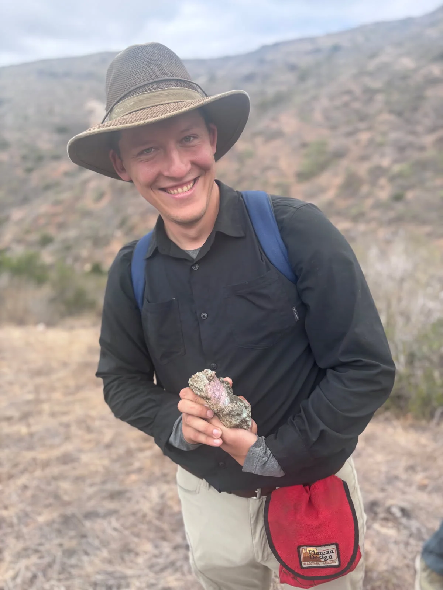

Magma dynamics and heterogeneity
What does heterogeneity reveal about magma storage, exchange, and eruption?

Volcanologist, Geochemist, and Experimental Petrologist
Postdoctoral Researcher
Earth and Planetary Sciences · University of California, Davis
I study how igneous processes become recorded in rocks and minerals, from volcanic systems on Earth to ancient magmas on the Moon.
My research treats physical and chemical heterogeneity as a fundamental feature of igneous systems. I combine experiments, microanalysis, field observations, and numerical models to understand how geological records form and change, and to test the assumptions used to interpret them.
Current research · Quartz growth
Quartz growth experiments point to a possible role for amorphous precursors in titanium uptake. I am testing how this growth pathway affects the chemical record used in Ti-in-quartz thermobarometry.

Research programme
What does heterogeneity reveal about magma storage, exchange, and eruption?
How does crystal growth influence mineral chemistry and the physical behaviour of rocks?

Which signals preserve original conditions, and which reflect later modification?

Presentations and education
Connecting geological observations to the processes that shape minerals, landscapes, and planets.
Presentations, teaching and outreach